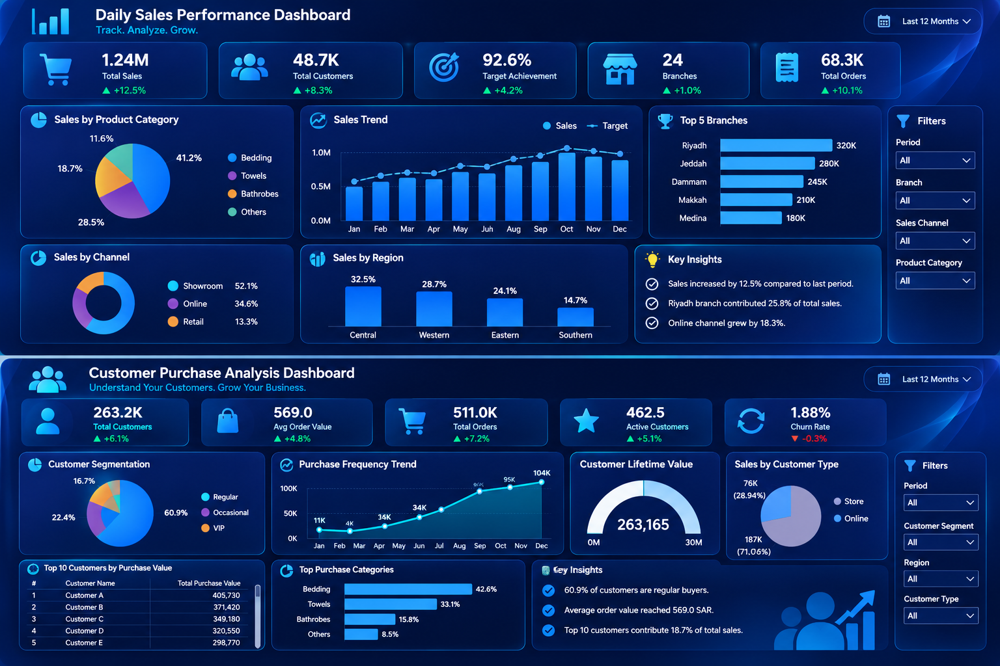

BUSINESS INTELLIGENCE
Daily Sales Performance Dashboard
A sales performance dashboard concept for monitoring sales trends, target achievement, branch performance, product categories, sales channels, and key business indicators.
View Project → Anonymized portfolio demo · Sample data